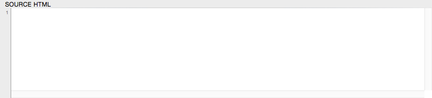

The Source HTML Area
The Source HTML panel is where you see and (if wanted) edit the original file. When you open a file, its text will be present in this panel.

Alternatively you can create a blank document and begin adding HTML markup in this area directly.
It’s often convenient to make quick-and-dirty, valid HTML documents by typing directly into this window without opening documents. We don’t recommend making this your primary HTML document editor, however, as there are many full-featured editors more adequate for working with text.